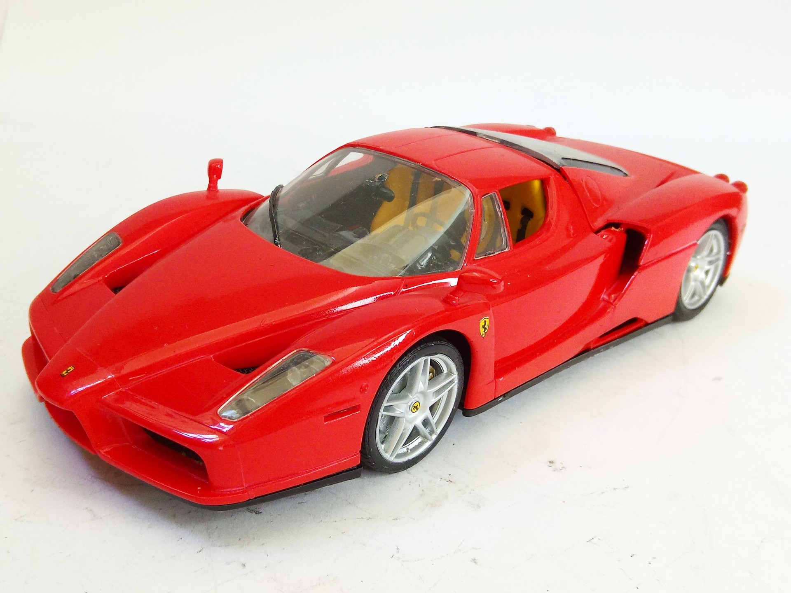
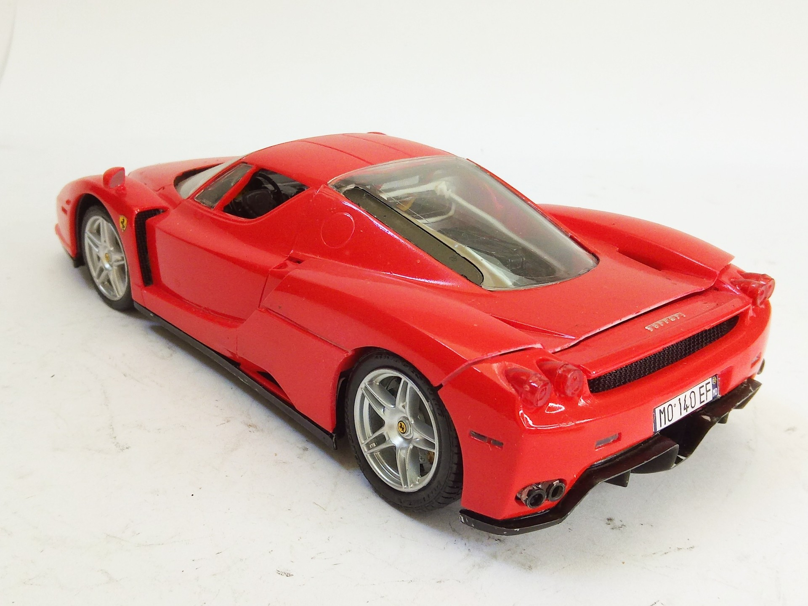

Auto e veicoli stradali · scale model archive
Ferrari Enzo
Ferrari Enzo — Kit: Revell, Scale: 1/24. Caused a lot of sensation as 'supercar' #1/24 #Revell

Photo gallery

English description
Caused a lot of sensation as 'supercar'
#1/24 #Revell
Descrizione italiana
Caused una lot di sensation as 'superauto'.